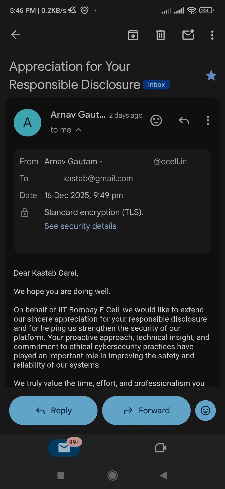
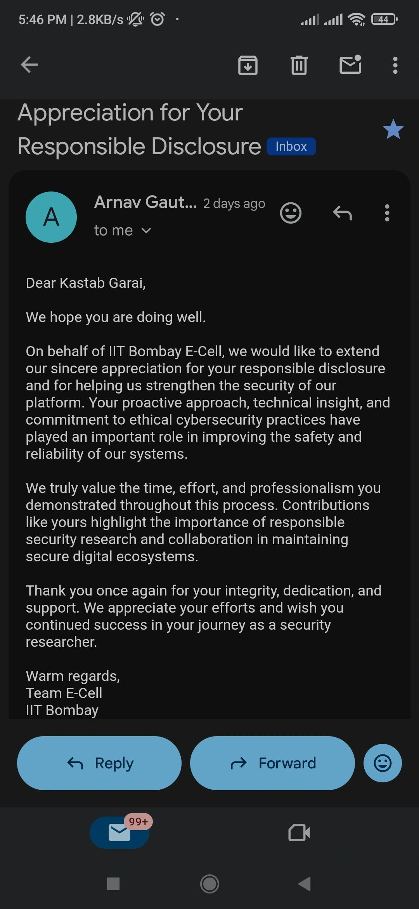

A Recognition That Meant More Than a Certificate — IIT Bombay & the Journey Behind It
For many, recognition is about awards, certificates, or applause — but for Kastab Garai, it became a quiet reminder that every late night, every failed test, and every line of code had meaning.
How a 20Y old boy Hacked & Secured IIT Bombay - Journey
Recently, IIT Bombay E-Cell acknowledged Kastab for responsibly disclosing a security vulnerability in their platform. The email — now added proudly to his growing list of milestones — may look like a small digital message to some, but for him it carried the weight of years of persistence, self-learning, and resilience.
Know More
What makes this recognition special is not just the institution, but the journey leading up to it. Kastab did not follow the traditional path many expect in the cybersecurity world. He was not born into opportunities, formal labels, or structured training. Instead, his growth came from curiosity — breaking things digitally to learn how they worked, fixing things ethically to make the digital world safer, and teaching himself along the way. Cybersecurity, for him, was never just about “hacking”; it was about patience, responsibility, and silence. While others saw the glamour of results, he lived through the invisible hours of practicing on broken systems, reading documentation late at night, testing vulnerabilities responsibly, and building skills that cannot be taught in classrooms. So when a place like IIT Bombay — an institution he once admired from a distance — recognized his efforts, it felt like more than validation. It was a reminder that one doesn’t need to belong to a prestigious institution to contribute to its growth; sometimes, life allows you to protect the very places you once dreamed of entering.


Caption describing what the image shows and why it's relevant
Conclusion
As Kastab continues his journey in ethical hacking and cybersecurity, he carries this moment not as a destination, but as a starting point — a sign that the world notices effort, even if silently, and sooner or later the right doors open.